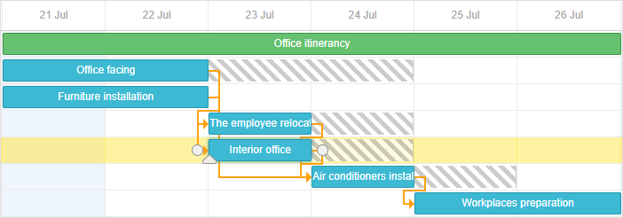

Available only in PRO Edition
This functionality is available only in the PRO edition
A critical path is a sequence of tasks that can't be delayed. Otherwise, the whole project would be delayed.
The critical path also determines the shortest time the project can take.
A task is considered critical if it has no days of slack and any delay would directly affect the project completion date.
Slack time is the time that a task can slip without affecting other tasks or the project's completion date.
To start using the extension, enable it using the gantt.plugins method.
To show the critical path in the Gantt chart, set the highlight_critical_path property to 'true':
Making the Gantt chart to display the critical path
<!DOCTYPE html>
<html>
<head>
<script src="codebase/dhtmlxgantt.js"></script>
<link href="codebase/dhtmlxgantt.css" rel="stylesheet">
</head>
<body>
gantt.plugins({ critical_path: true }); gantt.config.highlight_critical_path = true;
//your code will be here
</body>
</html>
Note that when the property is enabled, dhtmlxGantt will automatically check the status of tasks and update the critical path. Critical tasks and links will have additional 'critical_task' and 'critical_link' CSS classes, respectively.
Each time a task is modified, dhtmlxGantt will completely re-draw data in order to re-calculate the critical path. Sometimes it may create performance issues. For that case, the component provides public methods that allow you to check a certain task or link and implement a performance-friendlier strategy for displaying a critical path.
To check if some task is critical, use the isCriticalTask method:
gantt.config.highlight_critical_path = true; gantt.init("gantt_here");
gantt.parse(tasks);
gantt.isCriticalTask(gantt.getTask("task3"));// ->'true'
To check if a link is critical (connects 2 critical tasks), use the isCriticalLink method:
gantt.isCriticalLink(gantt.getLink("link1"));
Free slack - a period of time that can be used to increase the duration of a task or move it on the timeline without affecting the next task it is connected with.
To get the free slack of a task, make use of the getFreeSlack method. It takes the object of a task as a parameter:
var task = gantt.getTask(7);
gantt.getFreeSlack(task);
Related sample: Show Slack time
Total slack - a period of time that can be used to increase the duration of a task or move it on the timeline without affecting the time of ending of the whole project.
To get the total slack of a task, make use of the getTotalSlack method. It takes the object of a task as a parameter as well:
var task = gantt.getTask(7);
gantt.getTotalSlack(task);
Related sample: Show Slack time

By default, the gantt applies the default behavior to a critical path, such as default style for highlighting, re-calculating the critical path with each data update.
To manipulate the visibility of the critical path, use the following approach:
var isEnabled = false
function updateCriticalPath(){
isEnabled = !isEnabled;
gantt.config.highlight_critical_path = isEnabled;
gantt.render();
}
It can be useful when you have a big number of tasks and re-calculating the critical path may affect the performance.
To manually re-calculate the critical path and apply the related styling, use the following approach:
gantt.templates.task_class = function(start, end, task){
if(gantt.isCriticalTask(task))
return "critical_task";
return "";
};
gantt.templates.link_class = function(link){
if(gantt.isCriticalLink(link))
return "critical_link";
return "";
};
var data = {
tasks: [
{ id: 1, text: "Office itinerancy", open:true, type:"project" },
{ id: 2, text: "Office facing", start_date: "21-07-2020",
duration: "20", parent: "1" },
{ id: 3, text: "Furniture installation", start_date: "21-07-2020",
duration: "5", parent: "1" },
{ id: 4, text: "The employee relocation", start_date: "28-07-2020",
duration: "15", parent: "1" },
{ id: 5, text: "Interior office", start_date: "28-07-2020",
duration: "15", parent: "1" }
],
links: [
{ id: "1", source: "2", target: "3", type: "0" },
{ id: "2", source: "3", target: "4", type: "0" },
{ id: "3", source: "4", target: "5", type: "0" }
]
};
gantt.init("gantt_here");
gantt.parse(data);
It's possible to set lag and lead times between tasks of the critical path. You find the details here.
Back to top